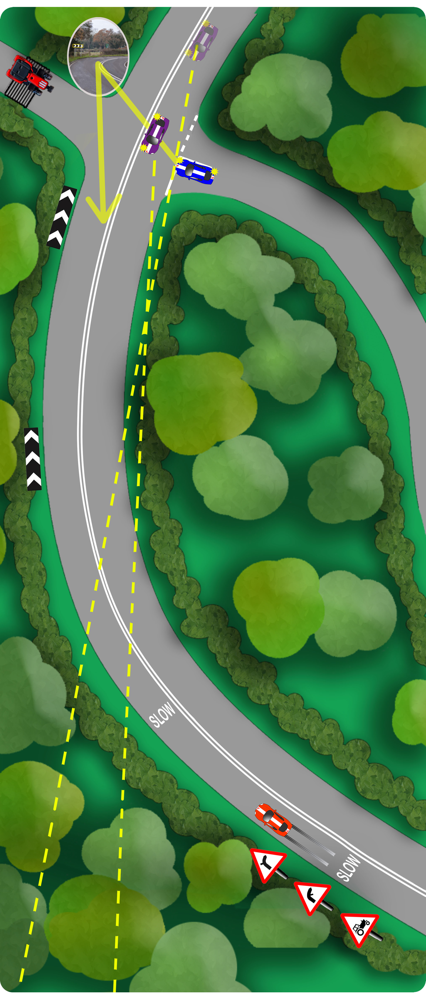
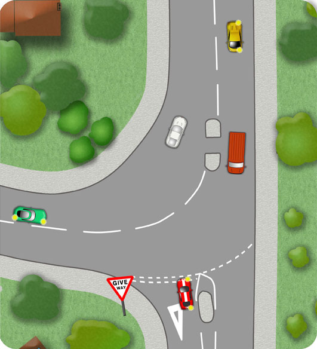

Very careful consideration must be made when negotiating junctions which are awkwardly located on bends in the road.
The blue car below must emerge extremely carefully to turn right. When visibility is poor, try to detect clues of approaching traffic like headlights, road noise and reflections. At some very awkward junctions, mirrors are placed to help see around the corner.
The purple car below, turning right, gains optimum visibility around the corner by following the centre line closely and for as far as possible before crossing into the side road. It is especially important not to begin to cross the centre line too early here.

Respond to warning signs of bends ahead and be particularly careful when warned of junctions on the bend. The red car above reduces its speed to prepare for crossing traffic and vehicles moving slowly as they emerge.
The junction below could be misinterpreted if not approached carefully.
